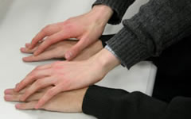

Signs for technical/specialized vocabulary
David Bar-Tzur
Links updated monthly with the help of LinkAlarm.


Japanese fingerbraille1; Michael Jackson.2
EXPLANATION OF THE GLOSSING SYSTEM
(to understand how I describe the signs in this dictionary).
For content knowledge of how to use the physics terms in context, see Guided tutorial in physics for interpreters.
For negotiating and developing temporary signs, see Preparation and sign negotiation
For vocabulary lists to determine helpful signs for a specific discipline, see Vocabulary lists by topic.
- jabber
- (2h)[4] crossed at knuckles are held at mouth and flutter FTs. For a QuickTime movie of this sign, see ASL browser - jabber.
- jack-o-lantern
- (1) (2h)[C], POs > head are held on both sides of the head and move with it as it nods to one side then other. For a QuickTime movie of this sign, see ASL browser - jack-o-lantern. (2) PUMPKIN BIG-SMILE, where second sign is (2h)[5:], DPOs down, NDPO up, FOs > DS, DH is held above NDH and both suddenly move so that FOs > away.
- Jackson, Michael
- [M] touches FT to temple and [J] does also and then spirals down like a lock of his hair.
- jackstand
- [3] modified to mimic the three legs of a jackstand strike FT against the palm of [B], PO up, FO away.
- Jacob
- [I] strokes down NDS then DS of chin like the movement in RESTAURANT. (< renamed Israel after he wrestled with the angel.)
- Jamaica
- DH [B] traces outline with palm of [B], PO down, FO away from signer. (< shape of island.) To see the reference source for the sign(s) for this country or to look up other countries in the same geographical area, see Indigenous signs for countries. To find signs for cities within this country (some have no entries) see Indigenous signs for cities.
- jamb
- (2h)[B], POs facing away from each other, FOs away, rise to show vertical sides of a door or window.
- James (Ἰακώβου)
- J-A-S.
- janitor
- (2h)[S] push mop forward on floor several times + AGENT.
- Japan
- (1) (2h)[L], DHPO down, NDHPO up, touch FTs and ascend while closing to (2h)[bO]. (2) (2h)[L], POs ><, touch FTs and separate while closing to (2h)[bO]. To see the reference source for the sign(s) for this country or to look up other countries in the same geographical area, see Indigenous signs for countries. To find signs for cities within this country (some have no entries) see Indigenous signs for cities.
- Japanese fingerbraille
- JAPAN + (2h)[5^], are held so that fingers point towards the signer, (2h)[5] point away and the three inner fingers wiggle in imitation of the method.
- Japanese industrial standard
- J-I-S.
- javelin
- (2h)[F], POs away, FOs up, are held together then separate to show the shape of a javelin + [S], PO > NDS, FO up, throws the javelin and opens to a [5].
- Jehovah (Jehovah's Witness)
- J-H.
- Jehovah's Witness
- J-W, but when the hands twists to make the [J], it does not return to the usual position for the [W], but instead the [W] has PO > the signer.
- Jeremiah [Heb. Yermiyahu]
- J-E-R.
- Jerusalem
- ~ (Christian)
- "J" CITY.
- ~ (Jewish)
- (1) Touch [B] to lips, then bow forward with (2h)[B], POs down.1 [< kissing a mezuzah (a scroll of Biblical verses affixed to doorposts), the city is famous for its huge mezuzot and the Muslims bowing at the mosque of Omar.] (2) [B with thumbs flush with other fingers but not folded into palm], touches mouth and then pronates.2 [< kissing the Western Wall (the retaining wall of the Jewish temple).]
- Jesus
- DH [open 8] touches the midpalm of NDH [B] and then
NDH [open 8] touches the midpalm of DH [B]. For an animated gif of this sign, see Animated dictionary of religious signs - Deaf Missions: Jesus.
- Jet Propulsion Laboratory
- J-P-L.
- Jew(ish)
- (1) [5^], PO > signer, strokes imaginary beard. For a QuickTime movie of this sign, see ASL browser - Jew. (2) TORAH PEOPLE, where the first sign is (2h)[S] (or [C]), POs up, twist twice while separating, as if unrolling a scroll.
- jewel
- [open 8] points middle finger to ring finger of NDH and moves away while twisting. For a movie of this sign, see Dictionary of Sign (ASL) - jewel.
- jewelry
- (2h)[4], POs > signer trace necklace from bottom to neck and then DH [8] grasps NDH wrist. For a QuickTime movie of this sign, see ASL browser - jewelry.
- Jewish New Year
- (1) (2h)[S] is held close to the lips as if blowing a shofar (ram's horn). The DH, which is further from the mouth, moves away and up, changing to a [5:] in imitation of the shofar's shape. (2) JEWISH NEW YEAR. (3) R-NEW H-YEAR.
- Jewry
- JEWISH PEOPLE.
- jihad
- GO-TOWARDS-GOAL"overtime" PERFECT, where the first sign is like GOAL, but the DH moves in vertical circles as if striving to attain a goal.
- jingoism
- REALLY-WANT CONQUER"each".
- jinni
- (2h)[3] touch edges of forehead with tips of thumbs and fingers are bent twice. For an animated gif of this sign, see Animated dictionary of religious signs - Deaf Missions: Demon. A Muslim term for an evil supernatural being that can take either human or animal form. Synonym for "satans."3
- Job [Heb. Yael]
- J-O-B.
- Job Control Language
- J-C-L.
- job entry subsystem
- J-E-S.
- Joel [Heb. Yoel]
- J-O-E-L.
- jog, jogging
- (2h)[S], POs ><, FOs away, hands move in slight circles as if jogging. For a QuickTime movie of this sign, see ASL browser - jog.
- John (Κατὰ Ἰωάννην)
- J-O-H-N.
- Johnson, Lyndon B.
- "L" "B" "J".
- joint
- ~ (anatomy)
- (2h)[F], interlace and pivot.
- ~ (marijuana)
- (1) [I], PO > NDS, FO away, twists slightly several times. (2) (2h)[I], NDHPO > DS, DHPO > signer, FTs touch and DH moves away slightly several times as if showing the shape of the joint.
- pass ~ around
- [G] is held with FT up and is passed in a semicircle towards the NDS.
- roll a ~
- (2h)[O^], POs up, FOs away, move forward while closing to (2h)[A] in a small double movement.
- rolling paper
- PAPER + (2h)[O^], POs up, FOs away, move forward while closing to (2h)[A] in a long smooth movement.
- Joint Electron Device Engineering Council
- J-E-D-E-C.
- joint users group
- J-U-G.
- joist
- J-O-I-S-T.
- Jonah [Heb. Yonah]
- J-O-N.
- Jordan (المملكة الأردنية الهاشمية)
- [L], FO up, touches thumb to forehead. For a film of this sign, click on Jordan - المملكة الأردنية الهاشمية. To see the reference source for the sign(s) for this country or to look up other countries in the same geographical area, see Indigenous signs for countries. To find signs for cities within this country (some have no entries) see Indigenous signs for cities.
- Joshua [Heb. Yehoshua]
- J-O-S-H.
- joule
- "J".
- joule-second
- J-S.
- journal
- ~
- (1) J-O-U-R-N-A-L. (2) [G], PO > NDS, FO away, runs FT up little finger side of [B], PO > signer, FO up.
- ~ of original entry
- FIRST TIME RECORD WHERE? THAT J-O-U-R-N-A-L.
- post (to ~)
- (2h)[V], POs ><, move from one place to another while bending FTs, then releasing.
- journaled file system
- J-F-S.
- journal entry
- J-E.
- Jovian planet
- PLANET LIKE J-U-P-I-T-E-R, where the first sign is [P], PO down, FO > NDS, orbits around [1], PO > DS, FO up.
- joystick
- [A], PO > NDS, FO away, rests on the palm of the [B], PO up, FO away, and twists at wrist while maintaining contact with the palm. For a movie of this sign, see Dictionary of Sign (ASL) - joystick.
- Jubilee
- FIFTIETH YEAR, CELEBRATE.
- Judaism
- JEWISH RELIGION. This is often regarded as the earliest monotheistic religion. It provided one of the main sources of Christianity. It has 20 million followers, and is the original of the Abramic religions.3
- Jude (Ἰούδα)
- J-U-D-E.
- judge
- ~ (Court)
- (1) (2h)[F], POs ><, FOs away, alt. ascend and descend, but AGENT is not signed, even if the noun is meant. (2) [bX], PO > NDS, FO away, strikes imaginary gavel on judge's bench.
- ~ (Sports)
- JUDGE, that is, (2h)[F], POs ><, FOs away, alt. ascend and descend, but AGENT is not signed, even if the noun is meant.
- Judges [Heb. Shof'tim]
- (1) J-U-D-G. (2) JUDGE INDEX-LIST-ON-HAND.
- Judgment Day
- DAY GOD JUDGE (2h)#ALL PEOPLE WILL.
- judicial branch, judiciary
- JUDGE BRANCH, where second sign is (2h)[1], POs down, FOs away, are held side by side, and DH moves away and then veers off to the side.
- judo
- (2h)[5], POs ><, FO up, are held at DS shoulder, circle each other, close to (2h)[S] and circle each other again.
- juice
- DRINK "J". For a QuickTime movie of this sign, see ASL browser - juice.
- jumbo
- BIG* with pc and head drawn back. For a QuickTime movie of this sign, see ASL browser - jumbo.
- jump
- ~ (battery)
- Tap middle joints of [X] together once like the movement in ELECTRIC + (2h)[V:] descend suddenly as if connecting batteries with DH FO > DS and NDPO > NDS.
- ~ (metaphorical, as in "~ to the next topic")
- [V], PO > signer, FO down, jumps (while curling) over [B], PO down, FO > DS.
- ~ (physical)
- [V], PO > signer, FO down, jumps from and lands back on palm of [B], PO up, FO > DS.
- jumper cables
- (2h)[V:] descend suddenly as if connecting batteries with DH FO > DS and NDPO > NDS + LINE.
- jump shot
- JUMP + [5:], PO away, FO up, moves forward and nods at wrist slightly.
- junction
- (2h)[1], POs down, DH taps midpoint of FT against NDH midpoint. For a QuickTime movie of this sign, see ASL browser - junction.
- junction-gate field-effect transistor
- J-F-E-T.
- junior
- DH index finger taps against ring finger of [5], PO > signer, FO up.
- jury
- (1) (2h)V:-CL'row of people facing signer'. (2) (2h)5:-CL'row of people facing signer'.
- just, justice
- (1) (2h)[B^], FOs up, tap FTs together while circling horizontally. (2) EQUAL. (3) RIGHT (ALRIGHT 1x). (4) JUDGE. (5) (2h)[B], DH slides pinkie side of hand down the middle of NDH, PO up, FO away from signer.
- justify
- ~ (general)
- TRUE + (2h)[B], POs up, FOS away, DH slaps the back of its hand onto the NDH palm. For a QuickTime movie of this sign, see ASL browser - justify.
- ~ (Christianity)
- MAKE SINNER RIGHTEOUS, that is, .
- left-~
- LEFT + [B], PO > NDS, FO away, moves down on left side to show margin.
- right-~
- RIGHT + [B], PO > NDS, FO away, moves down on right side to show margin.
- juvenile
- YOUNG CHILD. For a QuickTime movie of this sign, see ASL browser - juvenile.
- juvenile delinquent
- J-D.
Image credits
1. From http://www3.justnet.ne.jp/~shunta/cherry.htm (Sakuranbo), now a dead link.
2. The male celebrity archives - Michael Jackson.

Home